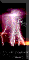

BBC Weather Centre
Other sources of Met.Office data on the WWW
WMO
Royal Meterological Society
European Centre for Medium-Range Weather Forecasts
Links to other weather sites on the WWW
Ian Watkins | iwatkins@meto.govt.uk | Last updated: 30 October 1995 | © Crown Copyright 1995

 BBC Weather CentreOther sources of Met.Office data on the WWWWMORoyal Meterological SocietyEuropean Centre for Medium-Range Weather ForecastsLinks to other weather sites on the WWW
BBC Weather CentreOther sources of Met.Office data on the WWWWMORoyal Meterological SocietyEuropean Centre for Medium-Range Weather ForecastsLinks to other weather sites on the WWW![[Left]](../pics/secleft.gif)
![[Up]](../pics/secup.gif)
![[Right]](../pics/secright.gif)
![[Home]](../pics/sechome.gif)